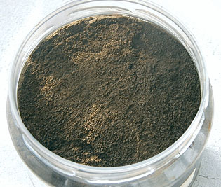
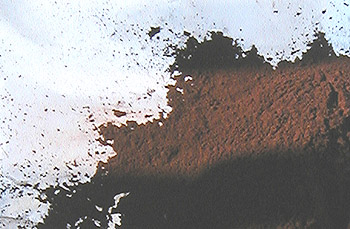
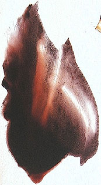

Les
terres d'ombre
Les terres d'ombre contiendraient à
l'état naturel du dioxyde de manganèse,
puissant siccatif des huiles et de l'argile ainsi que des oxydes de fer en
quantité plus faible que dans la terre de Sienne.
Lecture conseillée :
L'ombre sur Pourpre.com
Leur nom prêtent à confusion : oui, elles
sont utiles pour le peintre qui cherche à
figurer les carnations ombrées (avec la terre d'ombre naturelle rehaussée de
blanc et mêlée à d'autres couleurs - ce type d'emploi est déjà attesté
dans la peinture égypto-hellénique du Fayoum) mais leur étymologie découle uniquement, selon toute
vraisemblance, de
leur provenance, l'Ombrie, une province d'Italie située au Sud de la Toscane et au Nord du Latium.
Certaines sources mentionnent une terre d'ombre de Cologne et une
terre d'ombre de Chypre (Grèce), plus verte, réputée de très haute qualité
et dite à tort "'ombre de Turquie", ainsi qu'une terre de Sicile
(Italie) dont nous ne connaissons pas les particularités. Plusieurs autres
variétés proviennent du Vaucluse (France) et de Cassel (Allemagne).
Cette
terre existe à l'état naturel sur tous les continents.
Tendances
chromatiques

En fait, sa
tendance à l'état non calciné, est bleue-verte : elle est
relativement froide (à cause du manganèse sans doute), et pourtant assez brune pour que l'on sente en elle la présence d'oxyde
de fer anhydre.
D'un point de vue chromatique, elle est très
riche et intéressante (voir photo ci-contre).
Sa variété calcinée
(ci-dessous) donne un marron
foncé relativement proche de ce que l'on pourrait nommer un marron chocolat "standard"
mais peut-être moins que d'autres bruns chauds.
Elle fait référence. Elle est assez utilisée en mélange
(information obtenue de source commerciale - contredisant quelques auteurs).
Tout particulièrement, le
peintre débutant est généralement plus attiré par l'ombre brûlée - et il a tort,
mais qu'est-ce qu'un apprentissage ?
Des
modes, au cours de l'histoire de la peinture, on fait émerger périodiquement la même
préférence.
Chimiquement parlant, la calcination provoque une
déshydratation similaire à celle qui se produit lorsque l'on cuit de l'ocre
jaune pour obtenir une couleur rouge. L'ombre brûlée est nettement plus
rougeâtre que sa variété "crue", ce qui lui donne une aspect
chocolat que l'on n'a peut être pas tort de trouver beaucoup moins subtil
quoique non dénué d'intérêt.
Caractéristiques, comportement

La terre
d'ombre brûlée (voir photo : une terre d'ombre calcinée à la casserole -
lire Oxydes de fer) et la naturelle sont plutôt couvrantes - sans excès - et très
permanentes dans un environnement chimique normal.
Leur pouvoir absorbant un peu supérieur à la moyenne leur vaut un
rejet par certains auteurs, ce qui est un cas de figure classique (lire le texte
consacré au pouvoir d'absorption
dans l'article sur les caractéristiques des pigments). En ce qui nous concerne, nous ne
voyons aucune raison de déconseiller ces pigments pour des raisons de cet ordre.
Il faut simplement les lier
de manière raisonnable (ne pas les saturer de liant).
La Sienne naturelle, recelant
elle aussi du manganèse - soi-disant en moindre quantité, selon certaines sources
discutables -, pose dans les faits bien davantage de problèmes de siccativation. Lire l'article sur la
famille chimique des pigments au manganèse.
On a aussi accusé
"les
ombres" de noircir avec le temps. Cette hypothèse, qu'aucun de nous n'a
vérifié, ne pourrait être valable qu'en mélange avec des éléments fortement acides.
A ce moment-là, il n'est pas exclu que des associations se produisent et que
des sels se forment. Mais l'évidence même est qu'il vaut mieux se passer
d'éléments acides que de terres d'ombres !
Utilisations
L'emploi
des terres d'ombre en glacis au-dessus d'une couleur chaude
est particulièrement intéressant.
La variété calcinée donne alors une impression de bois qui a été mise
à profit de longue date dans la réalisation... des faux bois, en peinture
décorative. Les deux ombres servent à ternir, vieillir, anoblir toutes sortes
d'objets et de surfaces.
L'ombre naturelle est très puissante pour
"casser" des colorations trop franches, du blanc au noir, quelle que
soit la technique, quel que soit l'emploi (décoratif ou non). Elle ne présente
pas le défaut de ternir ces couleurs, contrairement au noir pur. Seuls des
noirs chauds comme la terre de Cassel
très diluée
peuvent à peu près remplir le même office.
Mais cette couleur remarquable connaît de nombreux autres emplois depuis des
millénaires, notamment en mélange sur le tableau (alla
prima comme en glacis), comme sous-couche
locale ou encore comme imprimature.
Comme
annoncé en introduction, la variété rouge est un peu plus difficile à
maîtriser.
Autres informations :
Il est possible de créer un noir
chromatiquement "riche" en associant l'une des terres d'ombres à un
bleu (de l'outremer au gris de Payne).
Leur emploi à fresque est
conseillé, même à l'extérieur.
Toxicité
Du point de vue de la toxicité,
l'ombre n'est pas complètement anodine à cause de sa teneur en manganèse :
inhalée ou ingérée à une forte dose, elle provoquerait des troubles nerveux de
type parkinsonien. Il n'est pas inutile de prendre quelques précautions,
notamment lors de l'ouverture des pots de pigments (couvrir d'un plastique), même si le risque d'accumulation de métaux dans l'organisme
semble négligeable.
Autres
bruns
Bruns
divers
La plupart des bruns sont à base d'oxyde de fer et
d'argile. Ils sont très répandus sur tous les continents. C'est la présence
de manganèse ou d'autres éléments qui peut faire l'intérêt spécifique de
certaines variétés telles que les terres d'ombre.
L'oxyde
de fer brun pur est un pigment très intéressant quoi que d'un
emploi malaisé : il est couvrant et
colorant à l'extrême. De plus, il est extrêmement bon marché. Ses très
puissants pouvoirs chromatiques le rendent difficile d'emploi lors des premiers
contacts. Par la suite, il devient un auxiliaire utile et transformable (en violet
de Mars, par cuisson à la casserole). Il suffit de
l'employer à faible dose.
Le brun
Van Dyck
Plutôt envahissante, ce n'est pas une couleur très
facile à employer. Même sur les tableaux de ce Maître un peu particulier,
ils ont gardé une certaine "présence" qui peut déplaire à certains. Cette
couleur correspond bien à l'oeuvre de ce peintre officiel, oeuvre aux
accents souvent solennels, parfois tragiques et rarement joyeux. Van Dyck ne
recherchait manifestement pas une composition très aérée mais mettait plutôt
en oeuvre, d'une certaine manière, des affirmations chromatiques massives au
service de ses motifs princiers. Soyons justes
mais clairs : l'oeuvre de Van Dyck comme le brun Van Dyck ont un grand
intérêt mais ne sont pas "d'un accès facile".
Le pigment serait un ocre jaune suffisamment calciné pour
devenir brun, mêlé éventuellement d'autres éléments (de l'humus, selon
certains auteurs qui mentionnent également le bitume,
pigment exécrable abandonné depuis longtemps, et le dioxyde de manganèse
calciné, effectivement toujours utilisé).
D'autres sources indiquent que ce brun proviendrait de Cassel (Allemagne). Si
cela semble effectivement possible, il ne faut pas pour autant confondre le brun
Van Dyck avec la terre de Cassel car
ces couleurs sont profondément différentes.
Dans les faits, les industriels adjoignent souvent
au brun initial un noir quelconque. De toute manière, aujourd'hui, la composition
de la couleur finale varie en fonction du fabricant. Sa permanence varie de
même. Elle est souvent moyenne, parfois bonne. Sa transparence varie en
fonction de la proportion d'oxyde de fer, substance couvrante.
En principe,
cependant, le
brun Van Dyck, sans être transparent, n'est pas très couvrant. Lorsqu'il est
conforme à cette spécification, il
permet de transformer efficacement l'aspect des métaux - dont les dorures
(feuille d'or ou peinture dorée) -, des faux bois
et des faux marbres, sans parler des glacis en peinture dite artistique. Des
variétés opaques existent cependant et sont largement disponibles dans le
commerce.
Il ressemble assez à la terre d'ombre brûlée, bien qu'un peu plus
rouge.

Les bruns
de quinacridone, superbes pigments ultramodernes tirant tantôt sur
l'orangé, tantôt sur le rouge (photo ci-contre) et vendus sous des intitulés
variés. Lire l'article consacré aux quinacridones.
Ils donnent des glacis magnifiques.
Leur floculation est
parfois très intéressante, comme le montre l'image.
Retour
début de page